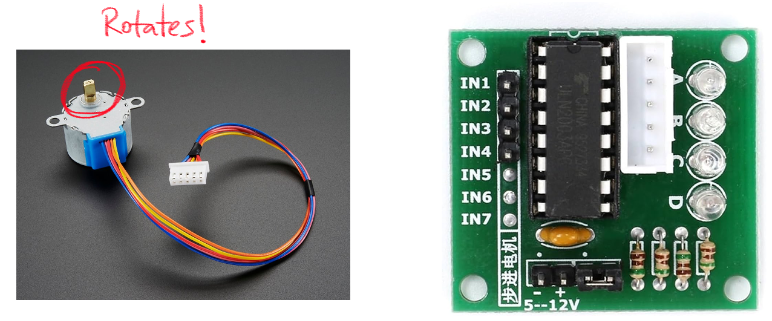

Here is all the documentation for my final project!
The way this contraption works is that it utilizes gravity. The stepper motor, with a plastic rectangle attached to it, has a primary function of rotating. If I push a button, the stepper motor will rotate the plastic about 90 degrees. When the plastic is in a certain position, it covers a hole at the bottom of the jar. When the stepper motor rotates and pauses at a certain position, the hole is uncovered and rice falls out into the container underneath!
Above is an image of the stepper motor and a ULN2003A. The stepper motor connects to the ULN2003A, which has 4 input pins, a power and a ground pin, and an area that connects the stepper motor to the ULN2003A, which then is connected to the Arduino.
This is my schematic. I used a 10k Ohm resistor to bring the button to ground. The schematic on the right, however, has resistors built into its structure, which means I did not need any additional resistors to use it. It uses a 2.7k, a 7.2k, and a 3k resistor. It also has 4 input pins, which I had connected pins 8 to 11 on the Arduino to.
#include // allows the use of the Stepper library, which acts as the output
const int revolution = 2048;
const int qtrPerRevolution = 512;
// constants won't change. They're used here to set pin numbers:
const int buttonPin = 2; // the number of the pushbutton pin
// use pin 8-11 to IN1-IN4
Stepper stepper = Stepper(revolution, 8, 10, 9, 11);
// variables will change:
int buttonState = 0; // variable for reading the pushbutton status
void setup() {
// initialize the button as input and stepper's initial speed
pinMode(buttonPin, INPUT);
stepper.setSpeed(10); //sets the speed of stepper motor to 10 revolutions per minute
}
void loop() {
// read the state of the pushbutton value:
buttonState = digitalRead(buttonPin);
// check if the pushbutton is pressed. If it is, the buttonState is HIGH:
if (buttonState == HIGH) {
delay(100); //creates an arbitrary delay
stepper.step(qtrPerRevolution); //rotates the stepper motor 90 degrees
}
}
This had a lot of challenges. Even though, admittedly, this looks like a crafts project, it was mechanically much more difficult than what I had originally thought.
My original sketch actually had the hole on the side of the box, and I was expecting the pressure to shoot the rice out easily. I also had the complication of the weight of the rice
, which changed my original plan of a Servo motor to a Stepper motor.
I had to melt a hole the box, which caused several smoke alarms to go off. The melted plastic also, then, blocked the way of the rectangular plastic from even moving. Then I realized
that the rice was, in fact, not going to smoothly come out, which meant I had to rotate the entire box, which messed up the placement of my wires a bit. Then, my stepper motor burned
out and I had to quickly purchase a pack of new ones and had to do a little bit of debugging on the code.
It turned out that it was not easy at all, but thankfully, I had managed to do it with a satisfying result!